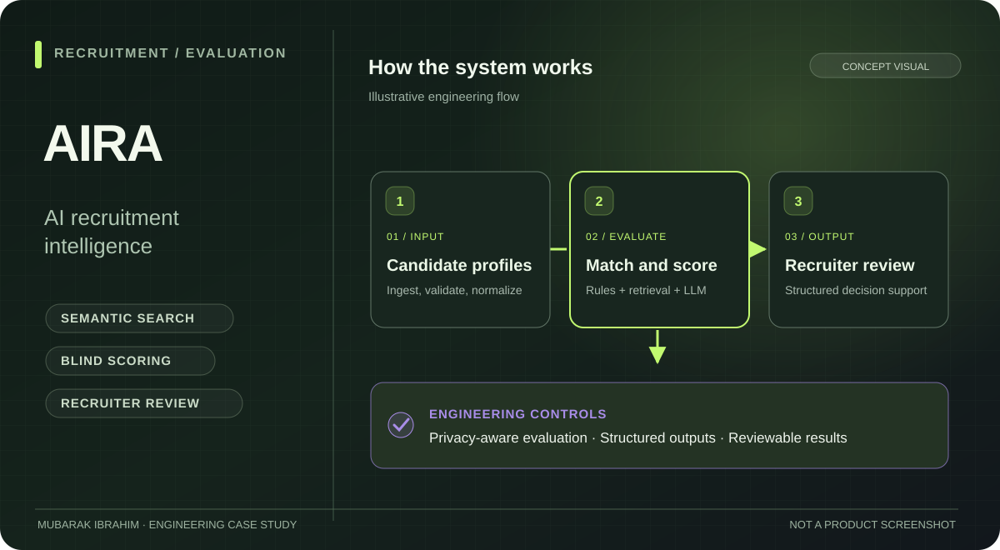

AIRA
Semantic retrieval and structured evaluation with PII-blind scoring.

Explore the engineering workflow
Resumes and candidate data enter structured workflows, where inputs are normalized before downstream scoring.
Platform architecture · Backend & AI engineering
The constraint
Recruiting workflows need consistent scoring while handling unstructured resumes and configurable requirements.
Decision: Hybrid evaluation
Deterministic rules establish explicit criteria, embeddings support retrieval, and LLM reasoning handles contextual analysis.
Tradeoff
This approach balances flexibility with control. Structured schemas constrain output format; they do not guarantee factual correctness, so output validation remains a separate concern.
Implementation and controls
Implemented PII-blind evaluation, schema and output validation, scoped workflows, tenant APIs and secure webhook integrations.
Evidence
The implementation is summarized here without publishing client source code or sensitive operational data. Quantitative results are not stated without measurement context.
Discuss this project
For engineering roles or project enquiries, contact mubastudio@gmail.com.